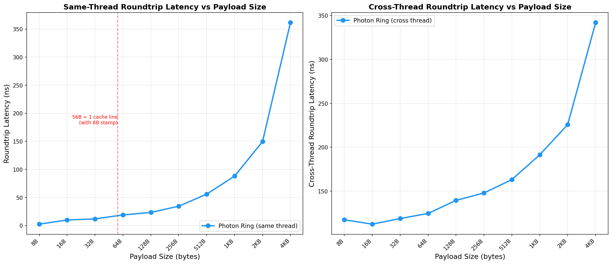

Benchmarks
Criterion (100 samples, --release, no custom RUSTFLAGS) on two machines.
Numbers are medians unless stated.
Hardware
Intel i7-10700KF — Primary
CPUIntel Core i7-10700KF
MicroarchComet Lake (14 nm)
Cores / Threads8C / 16T (SMT on)
Base / Turbo3.80 GHz / 5.10 GHz
L1d / L2 / L332 KB / 256 KB / 16 MB
OSLinux 6.8 (Ubuntu)
Rust1.93.1 stable
Apple M1 Pro — Secondary
CPUApple M1 Pro
Architectureaarch64 (ARMv8.5-A)
Cores8 (6P + 2E)
L1d (P-core)128 KB
L212 MB (P-cluster)
OSmacOS 26.3
Rust1.92.0 stable
Core operations
Compared against disruptor v4.0.0
(BusySpin wait, 4096-slot ring, same binary, same Criterion invocation).
| Operation |
Photon Ring (A) |
Photon Ring (B) |
disruptor-rs (A) |
disruptor-rs (B) |
| Publish only |
2.8 ns |
2.4 ns |
30.6 ns |
15.3 ns |
| Cross-thread roundtrip |
95 ns |
130 ns |
138 ns |
186 ns |
| Same-thread roundtrip (1 sub) |
2.7 ns |
8.8 ns |
— |
— |
| Fanout (10 subscribers) |
17.0 ns |
27.7 ns |
— |
— |
| SubscriberGroup read |
2.6 ns |
8.8 ns |
— |
— |
| MPMC (1 pub + 1 sub) |
12.1 ns |
10.6 ns |
— |
— |
| Empty poll |
0.85 ns |
1.1 ns |
— |
— |
| Batch publish 64 + drain |
158 ns |
282 ns |
— |
— |
| Struct roundtrip (24-byte Pod) |
4.8 ns |
9.3 ns |
— |
— |
| One-way latency p50 (RDTSC) |
48 ns |
— |
— |
— |
| Sustained throughput |
~300M msg/s |
~88M msg/s |
— |
— |
disruptor-rs comparison note:
Both libraries use BusySpin wait strategy and 4096-slot rings. The Disruptor
benchmarks run in the same Criterion binary, compiled with identical flags.
Cross-thread Disruptor numbers are not available because its consumer thread
is managed internally by the builder API.
See
benchmark methodology for full details.
Cross-thread roundtrip latency distribution
100,000,000 samples per library — Intel i7-10700KF, no core pinning
Publish Latency Comparison
Publish-only cost in nanoseconds, same Criterion run
Cross-Thread Roundtrip
Publisher → subscriber → signal-back, two machines
One-way Latency Percentiles (RDTSC)
p50, p90, p99, p99.9 on Intel i7-10700KF (x86_64)
Throughput
Sustained message rate, single publisher, single subscriber, BusySpin.
| Machine |
Throughput |
Notes |
| Intel i7-10700KF (Intel i7-10700KF) |
~300M msg/s |
BusySpin, 4096 slots, u64 payload |
| Apple M1 Pro (Apple M1 Pro) |
~88M msg/s |
BusySpin, 4096 slots, u64 payload |
Payload scaling
Photon Ring outperforms disruptor-rs at every payload size tested (8 B – 4 KiB).
See full payload scaling analysis.

Reproducibility: Numbers use T: Pod payloads and no custom RUSTFLAGS.
CPU governor, Turbo Boost, SMT, and core pinning are not controlled in the Criterion suite.
Run cargo bench on your own hardware and treat published figures as indicative snapshots.